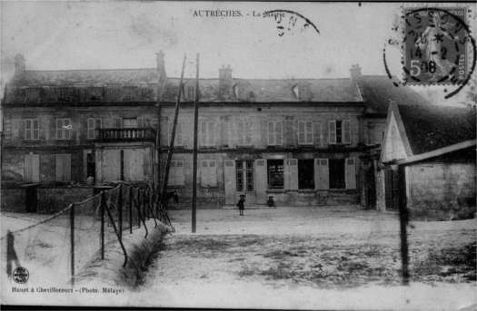
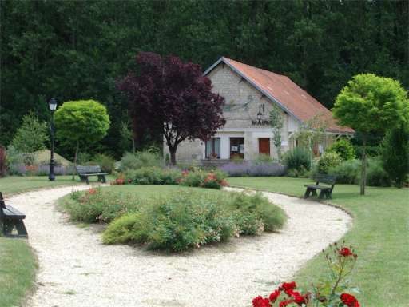

Autrêches et ses mairies successives.
Avec l'aménagement de la nouvelle mairie en 1983, nos édiles ont transféré très naturellement le lieu de leurs délibérations. Ce changement de localisation n'est pas le premier à Autrêches, et la circonstance semble toute indiquée pour remonter le temps et parler des différents endroits où se sont successivement tenues les assemblées municipales.
Avant la Révolution
Les affaires communales se traitaient alors dans des assemblées composées des habitants de la paroisse. Elles se tenaient à l'issue de la messe ou des vêpres devant la porte de l'église (ou dans l'église en cas de mauvais temps). Le syndic, tout comme le maire aujourd'hui, convoquait l'assemblée et la présidait. Par contre, il n'avait pas la qualité de magistrat et ne pouvait prendre d'arrêté. Chaque habitant avait la possibilité de prendre part aux débats comme aux votes (on sait qu'aujourd'hui ces prérogatives sont réservées aux seuls conseillers, mais que tout un chacun peut assister aux séances du conseil municipal).
De la Révolution à 1914
C'est un édit royal de juin 1787 qui mit fin à ce système et mit en place une représentation communale préfigurant l'organisation actuelle. En dehors du seigneur et du curé, membres de droit, tous les autres membres étaient élus par ceux des habitants payant au moins dix livres d'impôt.
Les premières élections municipales d'Autrêches eurent lieu l'année suivante, en 1788. Nous pensons que le précédent syndic, Pierre Quéquet, cultivateur du Tiolet, fut choisi (les fermiers du Tiolet étant des notables ; un certain nombre furent inhumés à l'intérieur de l'église). Ce Pierre Quéquet peut donc en quelque sorte être considéré comme ayant été le premier maire élu d'Autrêches. Il exerça au total 14 ans les fonctions de syndic et mourut le 19 mars 1791, à 76 ans et 7 mois, précise le registre.
Nous avons toute raison de penser que l'édifice dont la reproduction se trouve ci-dessous, et qui était la mairie-école d'Autrêches jusqu'en 1914, assurait ces fonctions depuis la Révolution. Cet édifice se trouvait place de l'Église et était contigu à l'actuel café. Il comprenait, outre la salle de classe, la salle de mairie et le logement du maître d'école ; un escalier monumental reliait le rez-de-chaussée au premier étage.

La vie dans les ruines (1918-1928)
La guerre a à ce point éprouvé Autrêches qu'il n'est resté pierre sur pierre de la mairie. Aujourd'hui, le sol goudronné et les arceaux ne laissent pas soupçonner qu'à cet endroit vide se trouvait le centre de la vie communale. Une mairie provisoire fut édifiée en 1918 dans des baraquements, non pas à Autrêches, mais à Chevillecourt, sur l'emplacement des préaux de l'actuelle école.
De la reconstruction de la mairie à sa désaffection (1928-1983)
Ce baraquement servit de mairie pendant dix ans… Le projet de reconstruction buta sur le choix d'un emplacement et divisa profondément les esprits. Les projets se succédèrent :
- On pensa tout d'abord à reconstruire la mairie sur le terrain où était édifiée avant la guerre la maison Lepierre. Ce terrain, en contrebas de l'église, est bordé par les rues Train et de la Horse. Il avait contre lui d'être trop accidenté et en terrasse, sans parler de l'opposition des habitants de Chevillecourt.
- En 1922, on pensa, de manière à faire plaisir à tout le monde (en n'arrangeant personne), à un lieu qui serait équidistant d'Autrêches, de Chevillecourt et d'Hautebraye. Ce lieu se trouvait en plein champ, au lieu-dit « La Folie ». L'inconvénient de cette Folie était que le terrain était littéralement bouleversé. Le résultat des sondages effectués aboutit au classement du projet.
- Un an plus tard, c'est la reconstruction sur l'emplacement d'avant-guerre qui fut envisagée. L'opposition catégorique des habitants de Chevillecourt fit avorter le projet.
- Le dernier projet fut le bon. En dépit de l'opposition farouche des habitants d'Autrêches, le projet définitif fut adopté en 1926 par la majorité du conseil.
Le terrain retenu était un terrain de culture (pas de travaux de déblaiement, donc) ; l'absence de dénivellation l'avait fait choisir, car elle permettait une économie de 60 000 F sur un devis de 367 308 F. Le financement fut assuré par les dommages de guerre. L'entreprise Rebais, de Compiègne, emporta le marché. Les matériaux vinrent de Pont-l'Évêque pour la brique et de Vassens pour la pierre. Les travaux commencèrent en octobre 1927 pour se terminer en juillet 1928 et furent l'œuvre d'une quinzaine d'ouvriers originaires d'Autrêches pour la plupart.
L'inauguration eut lieu le 11 novembre 1928, par le maire de l'époque, M. Nocq, en présence des autorités locales dont le préfet de l'Oise et l'inspecteur d'académie.
Au bout de 55 ans de bons et loyaux services, la mairie a traversé la rue, et l'histoire s'arrête pour faire place à l'actualité, et le passé au présent.
